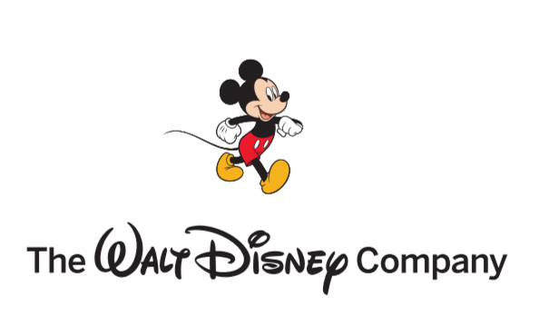
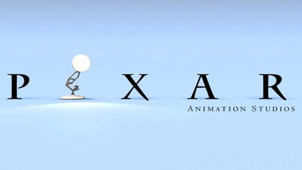
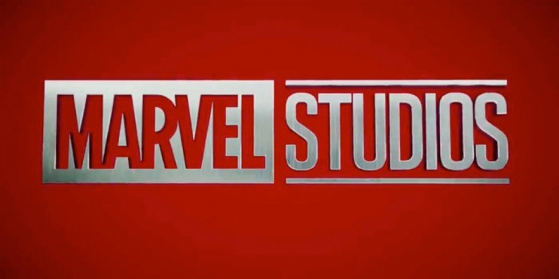
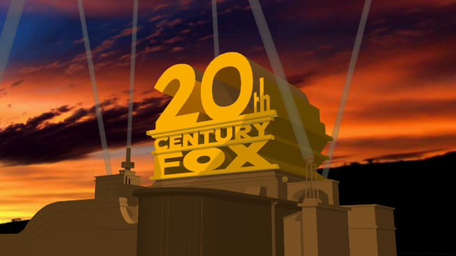

«Уолт Дисней Компани СНГ» занимается развитием бизнеса на территории России, стран СНГ, Грузии и Монголии. С момента основания в 2006 году и по настоящее время генеральным директором компании является Марина Жигалова-Озкан.
В России, странах СНГ, Грузии и Монголии компания развивает производство и прокат кинофильмов, сценические постановки, производство и дистрибуцию телевизионного контента, Канал Disney, лицензирование потребительских товаров — одежды, игрушек, товаров для детей, канцелярских принадлежностей, продуктов питания, косметических товаров и др., лицензирование издательской деятельности — книг и журналов для детей, производство и дистрибуцию цифрового видео, игр для консолей, мобильных и онлайн-игр, а также развивает направление тематических парков и круизные путешествия Disney среди туристов в России, странах СНГ, Грузии, Монголии, странах Балтии, в Греции, на Мальте и Кипре.
Подробней
Pixar Animation Studios

Студия Pixar, полное название которой звучит как Pixar Animation Studios, начинает свою историю более двадцати лет назад в далёком 1986 году. Именно тогда Стивен Джобс, известный всему миру, как генеральный директор и основатель американской корпорации Apple, покупает компанию The Graphics Group. Кроме того в ходе этой исторической покупки Джобс приобретает студию Lucasfilm, отдав за неё сумму в два раза меньше, чем составляла её реальная стоимость на тот момент. Однако Джордж Лукас, владевший этой студией, решился на столь рискованную сделку, так как ему требовались деньги для съемок прославленной киноэпопеи «Звёздные войны». Позже компания The Graphics Group получила название Pixar, которое стало известно любителям анимационных фильмов во всём мире. Под руководством Стива Джобса студия Pixar выпустила такие культовые работы, как «Корпорация монстров» и «История игрушек». Каждая новая работа студии становилась ярчайшим событием в области мультипликации, что подтверждалось сумасшедшими кассовыми сборами и толпами восторженных поклонников творчества художников и аниматоров из компании Pixar.
Подробней
Marvel Studios

Marvel Studios, LLC (первоначально известная как Marvel Films с 1993 до 1996 года) — американская киностудия, основанная в The Walt Disney Studios в Бербанке, штат Калифорния, и является дочерней компанией Walt Disney Studios, которая полностью принадлежит подразделению The Walt Disney Company. Президентом киностудии является кинопродюсер Файги. Ранее студия была дочерним предприятием Marvel Entertainment, пока The Walt Disney Company не реорганизовала компании в августе 2015 года.
Marvel Studios выпустила 19 фильмов с 2008 года в рамках кинематографической вселенной Marvel, от «Железного человека» (2008) до «Человека-муравья и Осы» (2018). Эти фильмы все разделяют преемственность друг с другом, а также «One-Shots», выпущенные студией, и телесериалы, выпущенные Marvel Television.
В 2018 компания 20th Century Fox была куплена компанией The Walt Disney Studios, благодаря чему Marvel Studios вернула права на своих персонажей (Люди-икс, Фантастическая Четверка и т.д.) после чего было объявлено что эти персонажи появятся в четвертой фазе киновселенной.
20th Century Fox

Кинокорпорация «Двадцатый Век Фокс» (англ. Twentieth Century Fox Film Corporation) — краткое наименование которой «20th Century Fox», является кинематографической компанией расположенной на юге Калифорнии. Эта студия принимала участие в создании Оригинальной трилогии Звёздных войн, а также отвечала за распространение Трилогии приквелов.
Фактически для Джорджа Лукаса Двадцатый Век Фокс не была первоочередным выбором в виде распространителя, первым кандидатом на это была компания «Universal Studios», которая его отвергла. Лукас убедил «Фокс», а именно Алана Лэдда младшего, на финансирование съёмок, в основном благодаря художественным работам Ральфа Маккуорри. В 1977 году рискованные вложения компании окупились, «Звёздные войны» стали на тот момент хитом. Капитал студии невообразимо возрос, несмотря на отданное Лукасу полное право использования товарного знака «Звёздные войны».
Даже после финального выхода «Звёздных войн», «Фокс» продолжает получать прибыль от прав на распространение и тиражирование DVD выпусков.